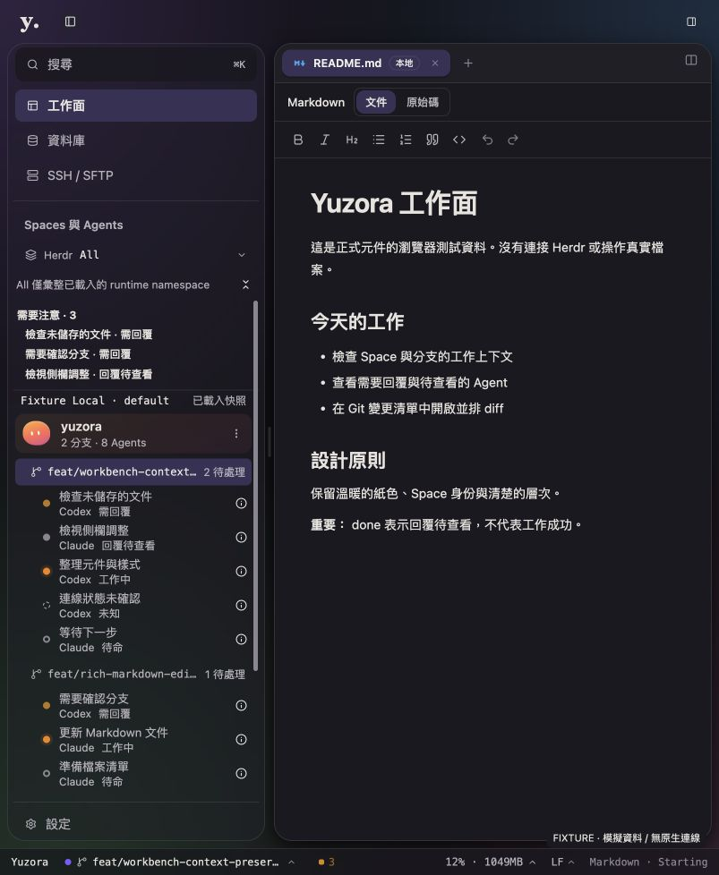

2026-09-08 · Production UI 變更紀錄可切換側欄背景，讓 Top-bar 融入工作面
左右側欄預設恢復霧面背景與邊框，使用者可在「設定 → 外觀」各自開啟／停用。Top-bar 移除品牌與控制群組的獨立卡片底色、邊框與陰影，與下方共用視窗漸層，並移除原有 8px 的內容上方空隙。
設定行為
| zh-TW ／ en | 範圍與預設 |
|---|
| 左側欄背景 ／ Left sidebar background | 共用導覽與 Spaces／Agents。預設開啟。 |
| 右側欄背景 ／ Right sidebar background | Files／Git 工作工具側欄。預設開啟。 |
沿用 shadcn Switch 與既有 ToggleRow／Field；開關具有可見 label、accessible name 與描述。關閉時背景、邊框顏色與 backdrop blur 變透明，保留 border 寬度與 padding，因此清單不會跳動。這些是外觀偏好，與側欄收合、width、工作模式或 runtime 控制權無關。
偏好保存於現有 yuzora:appearance-settings。舊版資料與非法欄位各自回落為 true；合法 false 可持久化。Theme／accent 更新保留兩側設定。設定搜尋加入「側欄背景」「邊框」「sidebar background」等索引。
Top-bar 整合方式
保留 48px 原生 chrome 高度與既有 drag-region，只移除分離的卡片視覺；內容區直接從 y48 開始，與 header 下緣相接。原生紅綠燈預留尺寸、Logo 位置、側欄控制的 accessible labels 與焦點行為均沿用。主工作面的閱讀背景保持穩定。
驗證
| 證據 | 結果 |
|---|
| 針對受影響範圍的測試 | 4 個檔案、53 項測試通過：AppShell、AppShell.layout、settingsStorage、settingsDialog.layout。包含舊資料遷移、左右獨立切換、即時保存、重新掛載還原及 theme／accent 保留。 |
| Build／TypeScript／lint | Build 與兩份 TypeScript config 通過；lint 0 errors、56 warnings；git diff --check 通過。本次沒有重跑整套 Rust、DB integration 或所有前端 tests。 |
| 真實瀏覽器 fixture 操作 | 已點擊兩側開關、關閉／重開設定、搜尋「側欄背景」並從結果跳轉、切換 light／dark 與 violet palette。關閉左側時右側背景維持；右側展開後透明背景亦已確認。 |
| DOM 尺寸與樣式 | 左側開關前後寬度皆 288px、高度皆 892px。開啟為 rgba(251,250,246,.48)、blur(20px)；關閉為 transparent、none。Header bottom 與 body top 均為 48px。數字是本回合 fixture 實測，不作為所有 viewport 的驗收。 |

803×978 瀏覽器 fixture；使用 production 元件、模擬 Sessions／Agents。非原生 App 或 live Herdr 功能驗收。
檔案與交付
src/app/AppShell.tsx、src/app/workbench/{SettingsDialog.tsx,settingsStorage.ts,settings-search.ts,workbench-shell.css}、兩語系 workbench.json 與三份受影響 tests。沿用前回合 dirty migration，未修改 demo 或執行 Git 寫入。
最新版 build 已同步至 dist，preview server 位於 http://localhost:1420。原生 App 當下正在使用 live terminal；本次未強制重新載入，也未向 terminal 傳送指令。原生 App 下一次重新載入前端後會看到新開關。可操作的隔離測試頁保留於 http://127.0.0.1:4321/output/ui-rollout/index.html。
本次未驗證完整 200% zoom、全部色盤對比或原生視窗 drag／traffic-light 的更新後 GUI；Native code 與控制位置未修改。驗證日誌位於 output/sidebar-background/{tests,build,lint}.log。